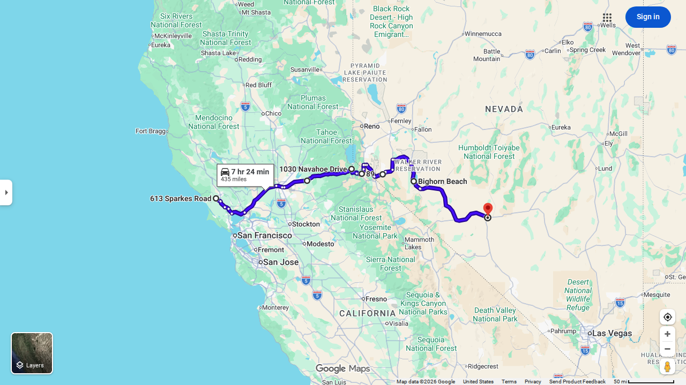
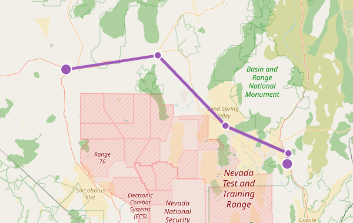
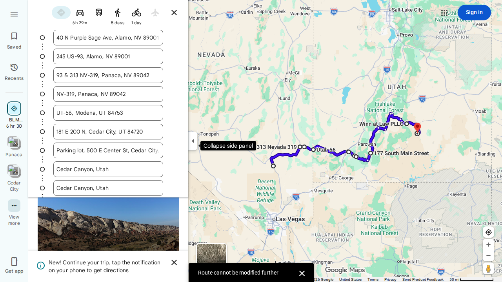
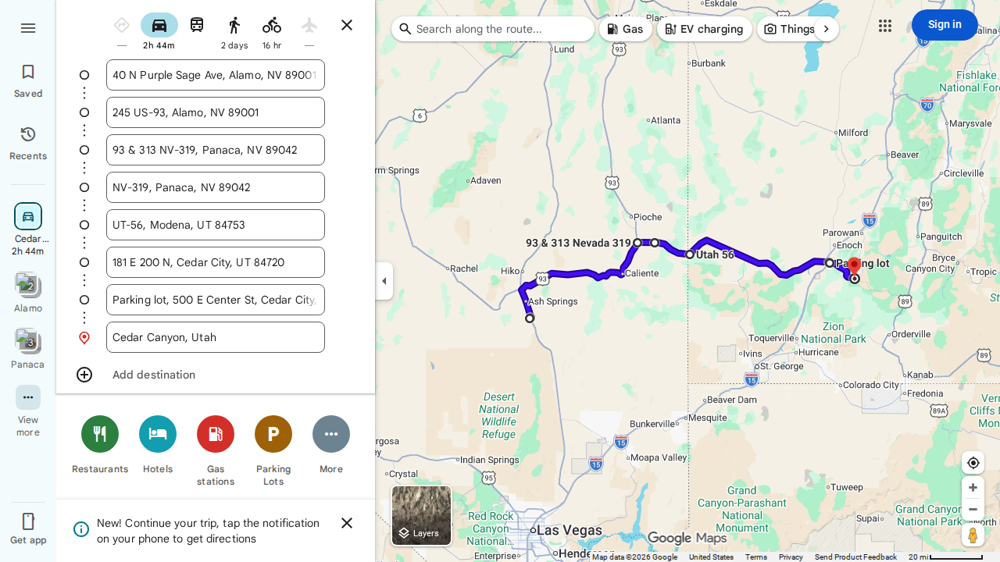
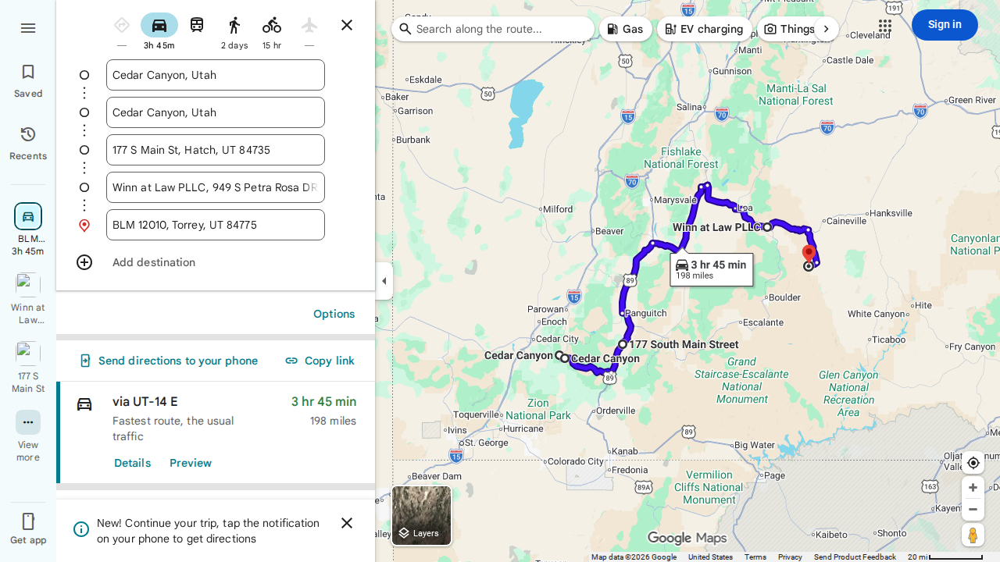
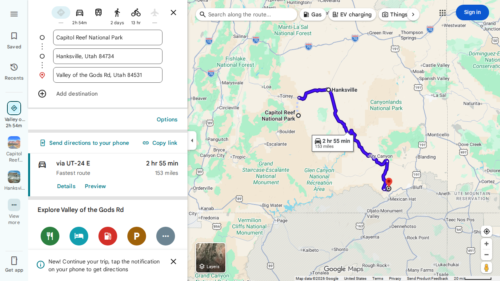

Sean Wagstaff · Triumph Tiger 900 Rally · Updated May 31 2026 10:45
Sebastopol CA to Tonopah NV

Leaving Sebastopol, the route heads south on US-101 then picks up I-80 east through Sacramento and up into the Sierra Nevada on US-50. At Meyers the road turns sharp right — the key junction — dropping south through Alpine Village and Rosie's Place into the Nevada high desert. The route continues south past Walker Lake before arriving in Tonopah for the night.
⛽ Fuel: Shingle Springs CA · Meyers CA · Walker Lake NV
⚠️ Hazards: US-50 Sierra: mountain grades · Tonopah: speed drops through town
Tonopah NV to Alamo NV (Extraterrestrial Highway)

A short but legendary day. Departing Tonopah — fill up before leaving, there's nothing reliable for 161 miles — the route heads east on US-6 to Warm Springs, then turns south onto NV-375, the Extraterrestrial Highway. The road runs dead straight through the high desert past the Nellis Air Force Range toward Rachel, the only town on the route and home of the Little A'Le'Inn. From Crystal Springs the route drops south on US-93 the final few miles to Alamo, where Ben's group is waiting.
⛽ Fuel: ⚠️ FILL UP IN TONOPAH — 161mi gap, Rachel unreliable
⚠️ Hazards: NV-375: free-range cattle at dawn/dusk · US-93 near Alamo: fresh chip seal
Alamo NV to Capitol Reef NP



Departing Alamo, Nevada, the route heads north on US-93 through the wide open rangelands of Lincoln County, passing through the small towns of Ash Springs and Caliente before bearing east toward Panaca, where the route turns onto NV-319. Crossing into Utah the road becomes UT-56, rolling through the high desert toward Cedar City — the last reliable fuel stop before a long scenic push. From Cedar City the route turns east on UT-14 (not I-15), climbing into the Dixie National Forest through Cedar Canyon. At the UT-148 junction the route swings north briefly before joining US-89 north at Long Valley Junction. At the junction with UT-12 the route turns east onto one of the most celebrated motorcycle roads in the American West — the UT-12 scenic byway winds through Red Canyon, Bryce Canyon country, Escalante, and the slickrock landscape above Boulder. From Torrey the final stretch follows UT-24 west into Capitol Reef National Park, ending at the visitor center.
⛽ Fuel: Caliente NV · Cedar City UT · Panguitch UT · Torrey UT
⚠️ Hazards: Cedar City: UT-14 EAST not I-15 · UT-12 winding mountain · UT-24 construction Mon-Fri 7AM-6PM
Capitol Reef UT to Valley of the Gods

From Capitol Reef the route heads east on UT-24 through the dramatic Waterpocket Fold canyon walls to Hanksville — the last fuel stop before a long remote stretch. Turning south on UT-95, the Bicentennial Highway, the road passes through the heart of the canyon country, skirting Natural Bridges National Monument before joining UT-261. The final descent via the Moki Dugway — three miles of unpaved switchbacks with no guardrails — drops off the Cedar Mesa escarpment into the Valley of the Gods, a remote sandstone landscape near Mexican Hat.
⛽ Fuel: Hanksville UT — LAST fuel before remote UT-95
⚠️ Hazards: Moki Dugway (UT-261): 3mi unpaved switchbacks, IMPASSABLE WET · Valley of Gods: 17mi gravel, dry only
Road conditions checked every 3h (7AM–7PM) via Telegram
Location tracked via inReach every 15min (7AM–7PM)
MapShare: share.garmin.com/KQYZ8
On ride day: send Hermes your location via Telegram for live-start links.
Export a GPX from Garmin, Kurviger, or any GPS app and send it to the trip bot with a description. The page updates automatically within minutes.
Include any notes with the file — e.g. "This is an offroad section after mile marker X" or "Replace Day 3 segment 2".
📎 Send me a new map Opens Telegram → attach your GPX file + add instructions